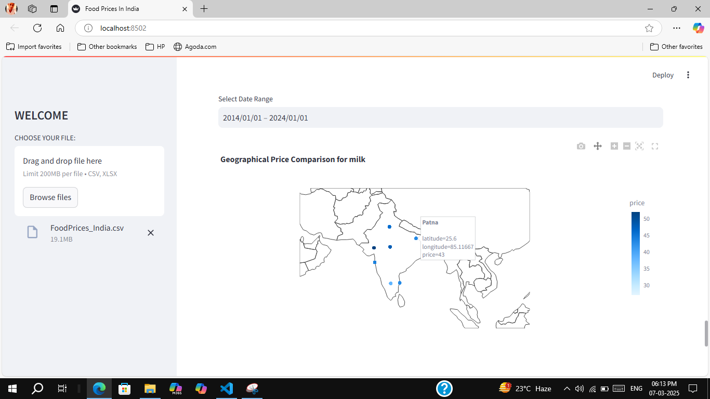
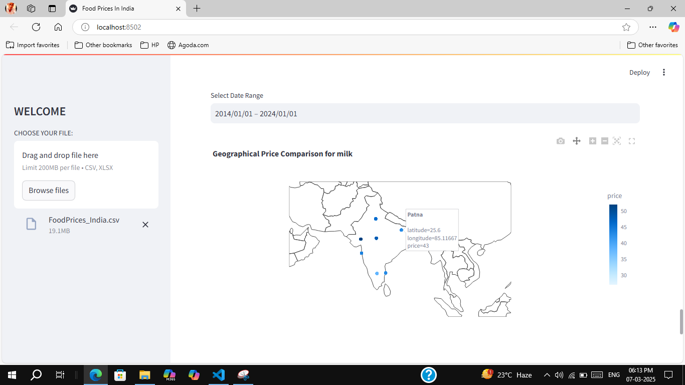

Projects
Avi Analytics App
Avi Analytics is a modular, interactive dashboard built with Streamlit that empowers users to perform data analysis, machine learning model evaluation, and dataset management through a clean and intuitive interface. With dedicated sections for visualizations, statistical insights, and custom ML workflows, it's designed to be accessible to both technical and non-technical users.
View ProjectE-Commerce Sales Data Analysis
Analyzed sales data to uncover trends in revenue, top-performing products, and customer behavior. Used Python (Pandas, Matplotlib) to visualize sales performance and identify seasonal patterns, enabling data-driven business insights and strategic planning.
View ProjectFood Prices Analysis
 

Conducted a comprehensive analysis of food price trends using public datasets. Utilized Python for data cleaning, transformation, and visualization to highlight inflation effects, regional price differences, and year-over-year changes in staple food items.
View ProjectEvent Taxi Booking Platform
An idea-stage platform like Uber/Ola but for wedding & long-trip car rentals. Conceptualized user flows and system design.
View Project